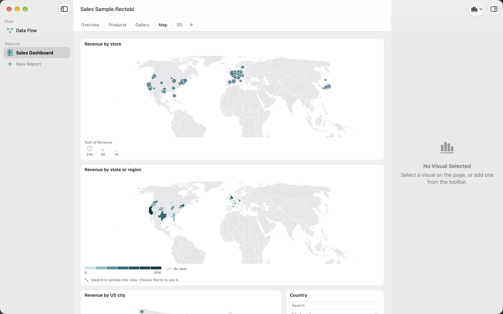
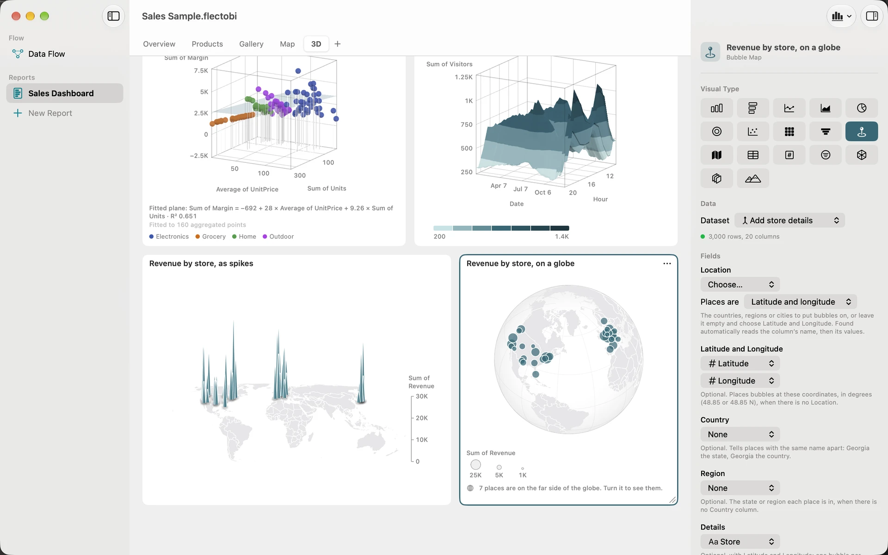

Map revenue by location
A map answers a question a table cannot: where. FlectoBI draws maps without an internet connection. The shapes and the place names are inside the app, so nothing is sent anywhere.
Goal: two maps of revenue, a Country slicer and a globe.
What you need: a Dataset with revenue and a place for each row. A Country Column is enough for a filled map. A City Column, or Latitude and Longitude Columns, works for a bubble map. You can also follow along in the Sales Sample, whose Map Page already has these Visuals.
Prepare one row per place
Maps work best on totals. If your data has one row per order, add a Summary Step first. Group by Country and add a Value: the Sum of Revenue. For bubbles by city, group by Country and City.
Check the place names in the preview. FlectoBI reads names with care: it ignores accents and case, knows common short forms and ISO codes, and knows names such as United States. Postal codes are not supported.
Draw a filled map
A filled map colours whole countries, states or regions by a value.
- Click your Report in the sidebar, or choose Report, then New Report. Select a Page.
- Click Add Visual and choose Filled Map.
- In the inspector, set Dataset to your Summary Step.
- In the Location well, choose Country. Under Places are, choose Countries, or leave it on Found automatically.
- In the Colour well, choose Revenue. The Aggregation is Sum.
Countries with data are filled in a teal scale, from light to dark. The others stay grey, and the legend has a No data swatch. Hover a country to see its name and value.

Draw a bubble map
A bubble map puts a circle on each place. The area of the circle shows the value.
- Add a Bubble Map Visual.
- For cities, set Location to your City Column and Places are to Cities. Add the Country Column to the Country well. This tells places with the same name apart, such as Paris in France and Paris in Texas.
- For coordinates, leave Location empty and fill Latitude and Longitude with your Columns. Degrees such as 48.85 are fine.
- Put Revenue in Size.
Click a bubble to select its place. Click it again to clear.
Fix places that do not match
FlectoBI says so when it cannot place a name. A note on the Visual reads like “2 places aren’t on the map: …”. It also tells you when a name could be several places and it chose the largest.
- Select the map. In the inspector, click Show details or Show unmatched.
- Read the two lists. Guessed shows names that could be several places. Not on the map shows names it could not find. The list shows up to 50 names.
- Fix the cause in the data, not on the map. Correct a spelling with Find & Replace. Add a Country Column if names clash.
- If your names are states or regions of one country, set Places are in to that country.
Add a Country slicer
- Add a Slicer and choose the Country Column as its Field.
- Tick one or two countries. The maps and every other Visual on the Page with a Country Column filter to them.
You can also click a country on the filled map. Other Visuals filter at once.
Press Esc to clear Selections.
Choose the view
In the inspector, the View picker has these choices:
- Fit to data: the default, a box around your places.
- World.
- A country: choose one with the Country picker.
- Globe: for a filled or bubble map.
The Globe turns only when you turn it. Drag it, or select the card and press Command with an arrow key. One step turns it 15 degrees. A line names places on the far side that you cannot see. Reset View returns to the start. Choose Keep This View in the card menu to save the angle in the Workbook.

What you learned
- Maps use names or coordinates, and tell you what they could not place. See Maps.
- A Slicer is a quick way to make a Selection. See Selections and Slicers.
- A Summary prepares one row for each place. See Transforms.